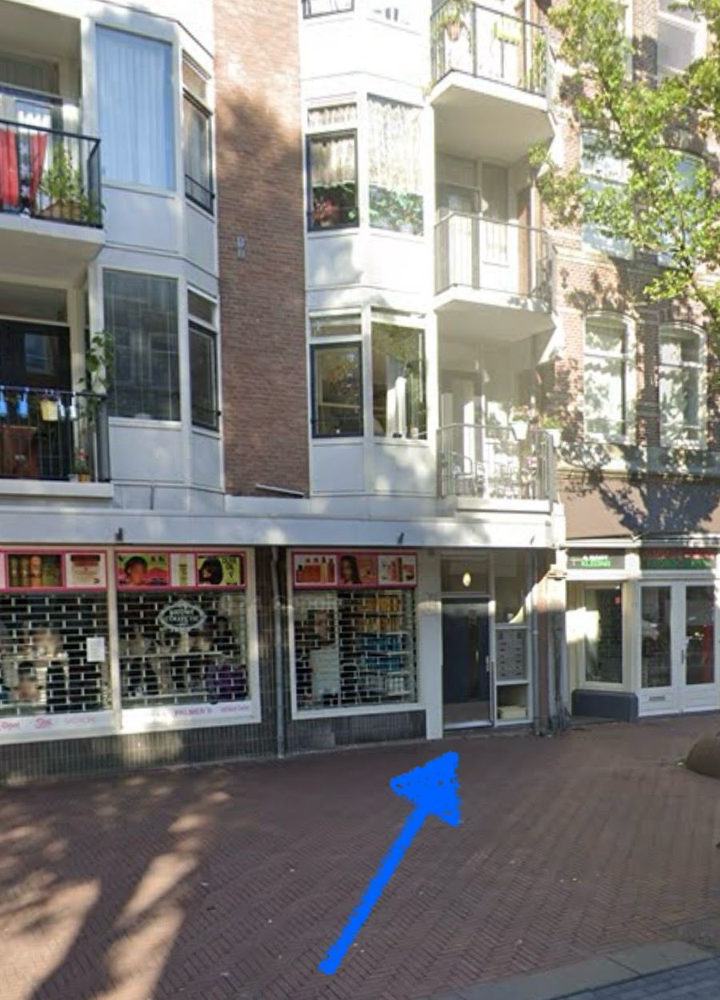

Wi-Fi
Réseau
KPN936C46Mot de passe
p2Ks9MdCfw94V6W2Copiez le mot de passe, puis choisissez KPN936C46 dans les réglages Wi-Fi de votre téléphone et collez-le.
Vous connectez un ordinateur ou un autre téléphone ?
Scannez avec l’appareil photo pour vous connecter automatiquement. Le même code figure dans le guide imprimé.
La maison
Ce n’est pas un logement de vacances : c’est l’appartement où je vis habituellement, vous y trouverez donc mes affaires. J’espère qu’il vous plaira !
Les voisins
- Si quelqu’un dans l’immeuble vous demande qui vous êtes, répondez simplement : « Je suis un ami de Rafa. » Les voisins me connaissent, tout ira bien.
- Saluez toujours les voisins d’un petit « Hi ».
Nourriture, café et thé
- Merci de ne pas utiliser la nourriture de l’étagère juste au-dessus de la cuisinière, ni mes compléments alimentaires posés sur le micro-ondes.
- Servez-vous librement en poivre, sel, huile, sucre, ketchup, moutarde, herbes, etc.
- Le thé et la machine à café sont à votre disposition. Comment utiliser la machine : vidéo, ou cherchez « Philips 2300 LatteGo » sur YouTube.
- Il y a de la place pour vous dans le frigo. Ce qui s’y trouve déjà et ne sera plus frais à mon retour, vous pouvez l’utiliser aussi.
- Les casseroles sont dans le tiroir sous la machine à café. Merci d’utiliser les planches à découper pour couper.
- L’eau du robinet est potable.
Lave-vaisselle
- Les pastilles sont dans la cuisine, dans le placard blanc tout à droite.
- Mettez une pastille et appuyez sur le bouton marche.
- Choisissez un programme, par exemple ECO, et appuyez sur START.
- Fermez la porte. Si vous entendez l’eau couler, ça fonctionne. Sinon, réessayez.
Lumière de la salle de bain
- C’est un vieil interrupteur à cordon, typiquement néerlandais. Le cordon est à votre droite en entrant dans la salle de bain : tirez dessus pour allumer ou éteindre.
Serviettes et literie
- Vos serviettes sont sur le lit double. Il y en a d’autres dans la salle de bain, sous le lavabo.
- Des oreillers et du linge de lit supplémentaires se trouvent dans le coffre du canapé.
Canapé-lit et matelas gonflable
- Le canapé se transforme en lit. Demandez-moi une vidéo sur WhatsApp pour savoir comment faire.
- Pour 3 ou 4 personnes, il y a aussi un matelas gonflable dans le coffre du canapé. Branchez-le et il se gonfle en quelques minutes. Pour le dégonfler, c’est pareil.
- Le dernier jour, merci de remettre le matelas comme et là où vous l’avez trouvé.
Chauffage
- Le chauffage passe automatiquement à 19 °C en journée et à 15 °C la nuit.
- Vous avez froid ? Il y a une couverture supplémentaire dans le placard, et une couche de plus sous votre pull aide beaucoup.
- Pour chauffer plus vite, tournez la molette du thermostat au mur de la cuisine. La température augmente pendant une heure, puis revient toute seule.
Poubelles
- Sac plein ? Déposez-le dans l’un des conteneurs de la rue. Le plus proche est au coin, à gauche en sortant de l’immeuble, avec des instructions dessus.
- Les sacs-poubelle neufs sont dans le placard de la cuisine, sous l’évier.
Aspirateur robot
- Vérifiez que le sol est sec et sans câbles, puis appuyez une fois sur le bouton du milieu. Il nettoie et retourne tout seul à sa base.
Plantes
- Ce serait super si vous pouviez arroser les plantes : une fois par semaine quand il fait froid, tous les jours quand il fait chaud.
- Faites attention à mon grand cactus. Il a eu un accident avec un ancien invité et a besoin de ménagement.
Règlement
- Interdiction de fumer à l’intérieur. Vous pouvez fumer sur les balcons, où vous trouverez des cendriers.
- Heures de calme de 22 h à 8 h, donc pas de musique forte à ce moment-là.
- Pas de fêtes ni d’événements.
- Visiteurs : seuls les invités enregistrés peuvent séjourner. Vous prévoyez de recevoir quelqu’un ? Prévenez-moi à l’avance.
- Casse et pertes facturées via Airbnb : verres ou ustensiles de cuisine cassés au prix du magasin plus 20 € pour mon déplacement, et 80 € pour un jeu de clés perdu.
- Laissez le logement comme vous l’avez trouvé et je serai ravi. S’il est laissé en désordre, des frais de ménage de 70 € s’appliquent.
Départ
Merci de partir avant 13 h pour que le ménage puisse commencer. Vous quittez Amsterdam plus tard ? Vous pouvez laisser vos bagages dans l’appartement, avec un jeu de clés, et les récupérer à tout moment dans la journée.
Avant de partir
- Laissez le logement « propre à l’œil » : enlevez simplement les déchets visibles. Pas besoin de passer l’aspirateur ou de frotter, le ménage s’occupe du reste.
- Mettez les sacs-poubelle pleins sur le balcon arrière (côté chambre).
- Mettez la vaisselle sale dans le lave-vaisselle et lancez-le. Ce qui ne rentre pas, lavez-le à la main.
- Vous avez utilisé le matelas gonflable ? Remettez-le comme et là où vous l’avez trouvé.
- Laissez les clés sur la table à manger et tirez bien la porte derrière vous. Il faut la pousser fermement pour qu’elle se ferme.
Autour du quartier
Itinéraires, commerces, restaurants, sorties et activités. Touchez un thème pour l’ouvrir.
Venir ici
Trajet depuis l’aéroport, l’entrée de l’immeuble et le retour.
Adresse de l’appartement
- Dapperstraat 191, 1093 BS Amsterdam. Touchez l’adresse pour l’ouvrir dans Google Maps. Le quartier s’appelle le Dapperbuurt, dans Amsterdam-Oost (Est).
Trouver l’entrée
- L’appartement se trouve dans la Dapperstraat, la rue du marché historique Dappermarkt. Google Maps est le moyen le plus simple pour trouver votre chemin.
- L’entrée de l’immeuble se trouve à côté de Malhi Afro Beauty.

La flèche indique la porte de l’immeuble. Image : Google Street View
Depuis l’aéroport de Schiphol
- Train : prenez le train jusqu’à la gare d’Amsterdam Muiderpoort. De la gare, il y a environ 10 minutes à pied.
- Taxi : ou prenez un Uber ou un Bolt directement jusqu’à Dapperstraat 191.
Depuis Amsterdam Centraal
- Tram : prenez le tram 14 direction Flevopark et descendez à l’arrêt Pontanusstraat. De là, la Dapperstraat est à quelques minutes à pied.
- Train : prenez un Sprinter jusqu’à Amsterdam Muiderpoort (un arrêt, environ 5 minutes). De la gare, il y a environ 10 minutes à pied.
- Dans les trams, métros, bus et trains, vous payez en passant votre carte bancaire ou votre téléphone sur le lecteur à la montée, puis à nouveau à la descente.
En voiture
- Je déconseille de venir en voiture en ville : le stationnement dans la rue est cher, payant à l’heure (week-end compris), et les places libres sont très difficiles à trouver.
- La meilleure option est un parking P+R (Park and Ride) en périphérie de la ville. Les plus proches de l’appartement sont P+R Zeeburg, à l’est, reliés à la ville par le tram 26 et le bus 37.
- Le tarif P+R est d’environ 6 € par 24 heures (13 € pour les premières 24 heures si vous arrivez avant 10 h un jour de semaine), mais seulement si vous continuez en transports en commun. Au moment de payer à la borne, vous scannez votre OV-chipkaart ou votre ticket P+R de GVB. Une carte bancaire utilisée pour valider ne donne pas droit à la réduction. Tarifs de janvier 2026.
- Tous les détails : Fonctionnement du P+R (amsterdam.nl, en anglais)
Retour à l’aéroport
- Repartez par le même chemin : prenez le train d’Amsterdam Muiderpoort à Schiphol.
- Vérifiez les horaires dans l’application NS ou sur Google Maps. Si la liaison directe ne circule pas à ce moment-là, l’application vous propose un autre itinéraire.
- N’oubliez pas de valider à nouveau votre carte en quittant le tram, le métro ou la gare, sinon vous payez le tarif maximum.
Commerces et marché
Le Dappermarkt, les supermarchés et les boulangeries.
Le Dappermarkt
- Le marché de rue juste devant la porte existe depuis 1910 et c’est le meilleur endroit pour les fruits, les légumes, le fromage, le poisson, les noix et les fleurs. Ouvert du lundi au samedi.
Supermarchés
- Albert Heijn Eerste van Swindenstraat 91 : juste au coin de la rue, ouvert tous les jours jusqu’à tard. Prix normaux.
- Lidl Eerste van Swindenstraat 52A : prix plus bas, avec une boulangerie sur place.
- Payer par carte : beaucoup de supermarchés et de magasins aux Pays-Bas, dont Albert Heijn, n’acceptent pas les cartes de crédit, et certaines cartes étrangères ne fonctionnent pas du tout. Une carte de débit (Maestro, V Pay, Visa Debit ou Debit Mastercard), ou votre téléphone associé à l’une d’elles, est l’option la plus sûre. Mieux vaut avoir une carte de secours.
Boulangeries
- Olafbrood Dapperstraat 42 : pain au levain, croissants et madeleines. Fermé le dimanche.
- L’Abeille Pastry & Coffee Dapperstraat 7 : pâtisseries françaises et café.
- Baking Lab Linnaeusstraat 99H : boulangerie-café avec viennoiseries, confitures maison et petit-déjeuner. Fermé le mardi.
Épiceries du monde
- Autour du Dappermarkt et dans la Javastraat, vous trouverez de nombreuses épiceries turques, marocaines, surinamaises et asiatiques avec des produits du monde entier.
Manger et boire
Petit-déjeuner, café, dîner et bars du quartier, comme la brasserie au pied du moulin.
Petit-déjeuner et brunch
- Le petit-déjeuner n’est pas inclus dans votre séjour. Quelques bonnes adresses à proximité :
- Greek Me Up Dapperstraat 12H : tourtes grecques, pâtisseries et freddo coffee. Fermé le lundi.
- BQ Canteen Oranje-Vrijstaatkade 69 : brunch, crêpes salées et matcha au bord du canal. Fermé le lundi.
- Café Chantilly Molukkenstraat 53 : grands pancakes maison et assiettes de petit-déjeuner. Ouvert du vendredi au lundi.
- Bar Botanique Eerste van Swindenstraat 581 : brunch le week-end dans un café rempli de plantes.
- Dignita Hoftuin Nieuwe Herengracht 18a : brunch dans un pavillon vitré au milieu d’un jardin, à environ 20 minutes à pied.
Café
Travailler avec un ordinateur portable
- KAFFEE Dapperplein 45 : grandes tables partagées, apprécié pour travailler.
- OBA Linnaeus Linnaeusstraat 44 : la bibliothèque municipale du quartier, avec des bureaux et le Wi-Fi. Vérifiez les horaires, car elle est fermée plusieurs jours par semaine. La bibliothèque (OBA) a d’autres sites en ville : cherchez « OBA » dans Google Maps.
- Volkshotel, The Social Hub anciennement The Student Hotel et House of Watt : des cafés où l’on peut travailler sur ordinateur, à 15 ou 20 minutes.
Déjeuner rapide et à emporter
- Beste Doner Dapperstraat 4 : döner à l’agneau ou au poulet, juste au marché. Fermé le dimanche.
- Roopram Roti Eerste van Swindenstraat 4 : une institution du roti surinamais. Prévoyez de faire la queue. Ouvert à partir de 14 h, fermé le lundi.
- Toko Jai Mata Eerste van Swindenstraat 191 : sandwichs surinamais, baras et plats faits maison.
Dîner à quelques minutes à pied
- Café Vlaming Dapperstraat 10 : petit bistrot aux plats simples et bien faits, comme le steak tartare, et bon vin.
- Café Dapper Dapperstraat 26 : bar à vin et restaurant avec une jolie terrasse, huîtres, poisson et plats végétariens.
- Nara Nara Dapperplein 25 : plats du Moyen-Orient à partager et limonades maison.
- Local Dealer Dapperplein 23 : tacos et tostadas mexicains, brunch le week-end.
- Buurtcafé De Tros Linnaeusstraat 63H : bistrot de quartier très prisé, en face de l’Oosterpark. Réservez à l’avance.
- De Biertuin Linnaeusstraat 29 : poulet rôti à la broche, burgers et une longue carte de bières. Idéal pour les groupes, réservez à l’avance.
La Javastraat
- À 10 minutes à pied vers l’est, la Javastraat est bordée de restaurants et de cafés du monde entier. Quelques adresses à essayer :
- Restaurant Nour Javastraat 109 : kebabs irakiens et pain frais sorti du four.
- Yemen Seafood Restaurant Javastraat 23H : grands plateaux de fruits de mer.
- Le French Café Javastraat 42 : cuisine de bistrot française.
- Bar Basquiat Javastraat 88-90 : bar de quartier avec burgers et tacos.
Pour les grandes occasions
- Cafe Wu Dapperstraat 1 : saveurs chinoises et technique française, en menu dégustation. Réservation conseillée.
- Bar Bachrach Javaplein 25 : cuisine moderne du Moyen-Orient et cocktails.
- Wilde Zwijnen Javaplein 23 : cuisine néerlandaise moderne avec des produits de fermes de la région, en menus.
- De Kas Kamerlingh Onneslaan 3 : restaurant dans une serre du Park Frankendael, qui cuisine les légumes de son propre potager. Réservez bien à l’avance.
- Amsterdam compte plus de 20 restaurants étoilés Michelin. L’application du Guide Michelin les montre tous sur une carte.
Bars du quartier
- Brouwerij ’t IJ Funenkade 7 : brasserie artisanale au pied d’un moulin, avec une grande terrasse, à environ 10 minutes à pied. Essayez la planche de dégustation.
- Café Publiek Dapperplein 23 : café de quartier avec une grande terrasse ensoleillée.
- Café Kuijper Linnaeusstraat 79 : « café brun » typique, avec une terrasse au soleil presque toute la journée.
- De Eeuwige Jeugd Linnaeusstraat 37A : le bar de la brasserie locale du même nom, avec des jeux de société.
- Ruk en Pluk Linnaeusstraat 48 : petit bar de quartier, très néerlandais.
Sortir
Bars, clubs, concerts et théâtre en ville.
Bon à savoir
- Les bars festifs sont faits pour boire, danser et discuter. Ils se remplissent vers 22 h, la musique monte vers minuit, et la plupart ferment vers 3 h ou 4 h.
- Les clubs sont faits pour danser. Achetez votre billet en ligne à l’avance. Les clubs se remplissent vers minuit et ferment généralement entre 4 h et 6 h.
- À l’entrée : les bars et clubs d’Amsterdam peuvent être stricts avec les grands groupes, les groupes d’hommes et les groupes étrangers. Un petit groupe avec quelqu’un qui parle néerlandais a le plus de chances. Sinon, souriez au videur et restez bref.
- Pour rentrer : après minuit, il n’y a plus que des bus de nuit, donc un taxi est souvent le plus simple pour rentrer à l’appartement.
Leidseplein : public néerlandais et international, idéal pour enchaîner les bars
De Pijp : surtout un public néerlandais
- Café ’t Paardje et Café Pilsvogel Gerard Douplein, Calle Ocho Albert Cuypstraat et Escobar, et bien d’autres bars dans le coin pour une bière, un vin ou un cocktail.
Rembrandtplein : surtout des touristes
- Coco’s Outback Thorbeckeplein et les nombreux bars autour.
Les clubs
- Consultez le site ou l’Instagram du club pour le thème de la soirée, et sachez qui est le DJ principal : le videur peut vous le demander pour vérifier que vous venez pour la musique.
- Escape Rembrandtplein, AIR Amstelstraat, Chin Chin Club Rozengracht, Paradiso Weteringschans et Melkweg Lijnbaansgracht.
- Techno : Shelter Amsterdam-Noord, Radion Louwesweg, Lofi Basisweg et Club Raum Humberweg.
- La plupart des grands clubs d’Amsterdam passent de la techno ou de la house. Si vous préférez autre chose, comme le reggae, le reggaeton ou le R&B, cherchez en ligne une soirée dans ce style.
Concerts et musique live
- Paradiso et Melkweg : connus pour programmer des artistes au début de leur carrière. La plupart de leurs sites sont en anglais.
- The Waterhole Korte Leidsedwarsstraat : groupes live, surtout des artistes peu connus.
- AFAS Live, Ziggo Dome et Johan Cruijff ArenA : les grandes salles pour les artistes célèbres, toutes côte à côte au sud-est de la ville.
- Classique : Concertgebouw Van Baerlestraat.
- Agenda complet des concerts et spectacles : www.iamsterdam.com
Théâtre
- Carré au bord de l’Amstel, à environ 20 minutes à pied et International Theater Amsterdam Leidseplein.
LGBTQ+
- Les bars gays sont tous côte à côte dans la Reguliersdwarsstraat, avec un public plutôt jeune. Parmi les bons : Blend, Taboo et Exit.
- Club NYX Reguliersdwarsstraat : pour danser. Achetez votre billet en ligne à l’avance.
- Club Church Kerkstraat : soirées fétichistes et à thème. Consultez d’abord le calendrier, beaucoup de soirées ont un dress code.
- PRIK Spuistraat : bar fréquenté surtout par des trentenaires et des quadragénaires. Spijkerbar Kerkstraat : tous âges, en gros de 30 à 70 ans.
- Sauna Nieuwezijds Nieuwezijds Armsteeg.
Coffeeshops (cannabis)
- Bon, certains d’entre vous veulent savoir, alors voilà. Le coffeeshop le plus proche est Happy People, au début de la rue.
- Un coffeeshop célèbre dans le centre : The Bulldog Leidseplein.
- Smoke Boat : une croisière sur les canaux où vous pouvez apporter votre propre cannabis. Départ du centre-ville, réservation en ligne.
- Rappel : il est interdit de fumer à l’intérieur de l’appartement.
À faire
L’Oosterpark, les musées et le centre-ville.
Dans le quartier
- Oosterpark : un grand parc à quelques minutes, idéal pour une promenade ou un footing.
- Wereldmuseum Amsterdam Linnaeusstraat 2 : musée des cultures du monde dans un magnifique bâtiment historique, l’ancien Tropenmuseum. À 5 à 10 minutes à pied.
- Artis Plantage Kerklaan 38-40 : le zoo d’Amsterdam, à environ 15 minutes à pied.
- Verzetsmuseum musée de la Résistance, Plantage Kerklaan 61 : la vie quotidienne à Amsterdam pendant la Seconde Guerre mondiale et la Résistance. À environ 15 minutes à pied.
- Hortus Botanicus Plantage Middenlaan 2a : l’un des plus anciens jardins botaniques du monde, à environ 20 minutes à pied.
Centre-ville
- La plupart des sites du centre sont à 20 à 30 minutes en tram, ou 15 à 20 minutes à vélo. Google Maps ou 9292 vous indique le meilleur itinéraire.
- Museumplein : Rijksmuseum les célèbres peintures néerlandaises du XVIIe siècle, Van Gogh Museum réservez à l’avance et Stedelijk Museum art moderne et contemporain.
- Maison d’Anne Frank : la maison où la famille Frank s’est cachée pendant la guerre. Réservez vos billets en ligne, souvent plusieurs semaines à l’avance.
- Palais royal Dam : faites la visite guidée pour découvrir Amsterdam au XVIIe siècle.
- Maison de Rembrandt : la maison où Rembrandt a vécu et travaillé, à environ 25 minutes à pied.
- Museum Van Loon et Ons’ Lieve Heer op Solder : découvrez l’intérieur de maisons de canal du XVIIe siècle. Le second cache une église dans ses combles, d’une époque où les autres religions étaient tolérées tant qu’elles restaient invisibles depuis la rue.
- Amsterdam Museum histoire de la ville, FOAM photographie et la Heineken Experience l’histoire de Heineken, dégustation comprise.
- NEMO Science Museum et Het Scheepvaartmuseum (Musée maritime national, avec une réplique d’un navire du XVIIe siècle) : tous deux au bord de l’eau, à environ 25 minutes à pied.
- Straat Museum : street art et graffitis sur le chantier naval NDSM à Amsterdam-Noord. Prenez le ferry gratuit derrière Amsterdam Centraal.
- La liste complète des musées : Liste des musées d’Amsterdam (Wikipédia, en anglais)
Les canaux
- Les croisières sur les canaux partent de nombreux endroits du centre, par exemple autour d’Amsterdam Centraal et en face de la Heineken Experience.
- De beaux endroits pour votre photo de canal : Spiegelgracht 36, Leidsegracht 68 et Reguliersgracht 88.
Détente : sauna
- Sauna Deco Herengracht : sauna Art déco dans le centre.
- Zuiver Koenenkade : grand centre de bien-être avec de nombreux saunas et piscines, à côté de l’Amsterdamse Bos.
- Volkshotel Wibautstraat : jacuzzis et sauna sur le toit, à environ 15 minutes.